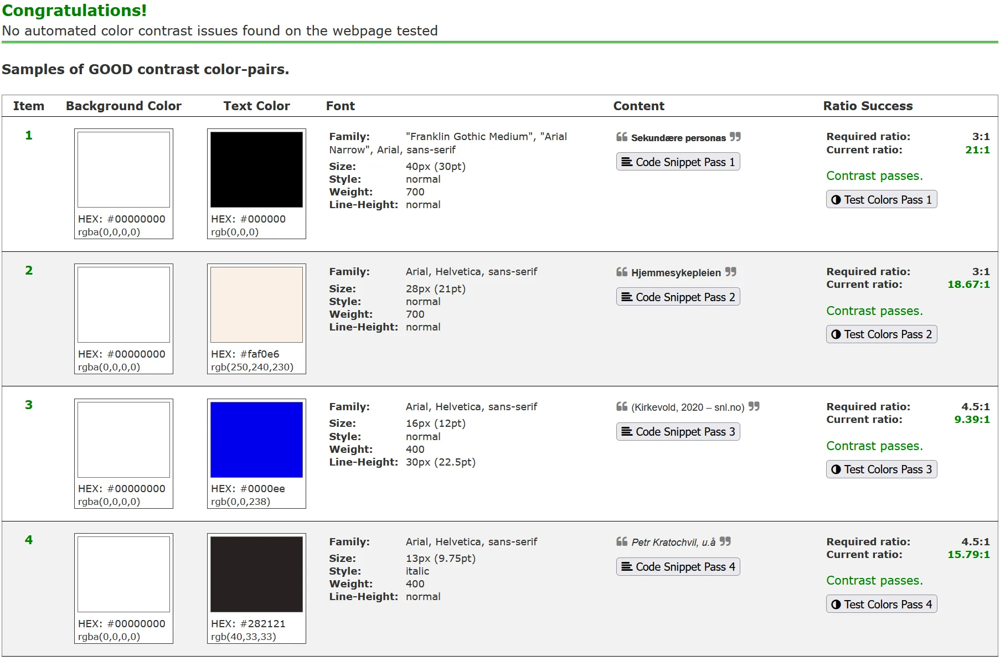

Tilgjengelighet
Vi brukte i hovedsak Lighthouse gjennom mesteparten av utviklingsprosessen for å sikre nettstedets tilgjengelighet. Vi begynte tidlig og testet kontinuerlig gjennom hele prosjektet for å sørge for at god tilgjengelighetspraksis ble fulgt fortløpende.
For å vurdere tilgjengelighetshensyn utover det tester kan fortelle oss, har vi (i tillegg til «Additional Items to Manually Check» i Lighthouse) også gått gjennom «Sjekk nettstedet ditt selv» hos uutilsynet.no. Nedenfor har vi oppsummert hva vi har gjort for å etterleve disse punktene.
Tastaturnavigering
Vi har kontrollert at tab-rekkefølgen virker fornuftig, og at alle relevante elementer er fokuserbare og har tydelige fokusmarkeringer. En snarveilenke fra toppen av siden og ned til innholdet virker imidlertid lite hensiktsmessig når vi har en såpass slank menylinje.
Forstørring og responsivt design
Nettstedet ser ut til å fungere godt ved både 200 % og 400 % forstørring. Videre har vi gjort mange bevisste grep for å oppnå et responsivt design som fungerer godt på både bred og smal skjerm:
- Datamaskinversjonen av nettstedet (bredde over 1000px)
- har brede marger for å lette lesbarheten
- har svevende menyer som følger rulleposisjonen («sticky») for å forenkle navigeringen
- viser tekst og bilder side om side ved bruk av grid (på emnesiden)
- Mobilversjonen av nettstedet (bredde 1000px og under)
- har smale marger for å utnytte plassen bedre
- har en fastlåst toppmeny som går helt ut til kantene og er «kollapset» til ett element som kan utvides ved behov, slik at den ikke tar opp mer plass enn nødvendig når den ikke er i bruk
- viser tekst, bilder og footerkolonner under hverandre for at elementene ikke skal bli for små
Kode for dynamiske marger. Linje 62–69 i style.css.
Utdrag av koden for layout for smale skjermer. Den faktiske koden har flere kommentarer. Linje 413–458 i style.css.
Farger og kontrast
Vi har vært bevisst på fargevalg, kontraster og lesbarhet gjennom hele utviklingsprosessen. I tillegg har vi kjørt A11Y Color Contrast Accessibility Validator på siden for å sikre at kontrastkravene i WCAG 2.1 er oppfylt.
Skjermdump av A11Y-rapporten fra en av sidene.
Overskrifter
Vi har sørget for at overskriftene på nettstedet har semantisk betydning og følger en fornuftig struktur, uten at nivåer er hoppet over, slik at f.eks. lesermodus genererer en logisk innholdsfortegnelse.
Lenker
Lenkene på nettstedet informerer tydelig om hvor de fører hen, og de er godt synliggjort gjennom både fargevalg og understreking. Vi har valgt å holde oss nærme det konvensjonelle fargeskjemaet med blå lenker som blir lilla når de er besøkt, og dessuten animeres de når man holder musen over dem. Eksempel: Gå tilbake til forsiden. Vi har utelatt understreking av lenker på menyer samt lenker til sosiale medier i footeren, da vi mener at visuell og/eller semantisk kontekst gjør det tilstrekkelig tydelig at disse er klikkbare.
Kode for lenkefarger. Linje 171–189 i style.css.
Bilder
Vi har passet på å inkludere attributtene alt, width og height for img-elementer.
alt-attributtene sørger for at bildene er forståelige og meningsbærende for brukere av assisterende teknologi (f.eks. skjermlesere). Bilder av koden har henvisninger til linjenumrene i alt-teksten, siden det blir omstendelig og sannsynligvis har liten nytteverdi for brukeren om den faktiske koden inkluderes i alt-teksten.
width og height forteller nettleseren størrelsen på bildene før de er lastet inn, slik at den slipper å rekalkulere layouten fortløpende. Dermed unngår vi at elementer hopper rundt omkring under innlasting, noe som gir en bedre brukeropplevelse. Vi har også skalert ned bilder og konvertert dem til webp-format for å holde størrelsen lavest mulig.
Skjema
Ikke aktuelt.
Søkefunksjonen
Ikke aktuelt.
Sidetitler
Vi har passet på at alle title-tagger er relevante og slutter med det samme nettstedsnavnet på alle sidene.
Kodevalidering
Vi har kjørt W3C-validatoren på alle sidene gjentatte ganger og løst alle feilene som ble funnet, f.eks. manglende start- og slutt-tagger, meta-tagger og så videre.
Rapport fra W3C-validatoren på makerspace.html.